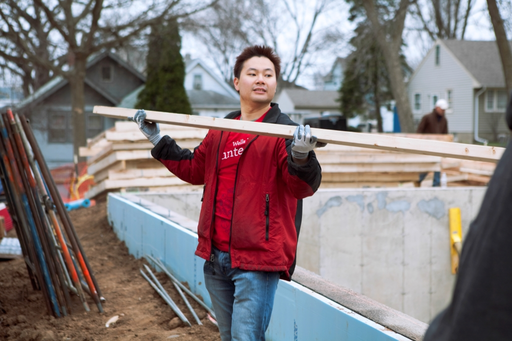

Together, we can make a difference

“At Wells Fargo, corporate social responsibility (CSR) is part of our culture — it’s fundamental to our vision and values and the way we manage our company.
It’s been that way since our founding in 1852 when cofounder Henry Wells said,
‘Our lives are not measured by the number of years and days we exist,
but by what we accomplish while we live, and the good we may render to our fellow man.’
That heritage holds true today — and it’s important to our future.”
— Jon R. Campbell, Executive Vice President and head of Government and Community Relations
For the sixth year in a row, Wells Fargo was named United Way Worldwide’s #1 workplace giving campaign in the U.S.
In 2014, our team members contributed a record US$97.7 million to nonprofits and schools, and volunteered 1.74 million hours in their communities.
For the past four years, during our Annual Sibos Celebration reception, Wells Fargo has made an annual US$10,000 donation
to charities and nonprofits in the communities where our team members live and work.
At Wells Fargo, we believe everyone deserves a decent, safe place to call home.
In the past five years, Wells Fargo has donated more than $40 million to Habitat for Humanity International and affiliates combined,
as part of the Wells Fargo Housing Foundation’s commitment to support affordable housing initiatives serving low- and moderate-income households,
and sustainable housing and community revitalization efforts.
Wells Fargo is one of the largest providers of volunteers to Habitat with team members participating in projects globally.
This year at Sibos, please help us continue our support of Habitat for Humanity.
We have selected four Habitat for Humanity sites around the globe in need of further funding and support.
Through a fun voting process, you will get to help determine how to distribute a total of US$10,000 to the following sites:
|
Habitat for Humanity Brazil
Habitat for Humanity began working in Brazil in 1992 by serving families who suffered tremendous losses due to floods in Belo Horizonte.
Habitat’s work in Brazil has helped 12,708 families in 11 states throughout the country by helping to build 4,531 homes and improve 1,512 homes.
It also has helped 2,356 families secure land tenure.
“Having the opportunity to volunteer in our global communities — most recently in Brazil through Habitat for Humanity’s Global Village Program
— really allows me to gain perspective and balance in the rest of my life.
Brazil represents such a dichotomy of socioeconomic conditions while still being rooted in a deep sense of culture.
I am honored and humbled that Wells Fargo provided me the opportunity, financial support, and volunteer leave time to support Habitat,
and to help the amazing city of Recife, Brazil flourish.”
—Laura Fay, Head of Communications and Public Relations for Wells Fargo Funds Management Group
Habitat for Humanity Great Britain
Habitat Great Britain supports international and local projects for people in need of decent homes, both financially and technically.
Habitat also runs a volunteer program in the country as a means of raising the profile of poverty housing and cultivating activists
for the right to decent housing.
Through its strong Global Village program, Habitat for Humanity Great Britain has sent more than 5,000 volunteers in at least 385 teams
to Argentina, Armenia, Bangladesh, Brazil, Bulgaria, Malawi, and many other countries since 2001.
“Habitat for Humanity Great Britain aims to build a pathway out of poverty by eliminating poverty housing and homelessness.
This vision is something I experienced first-hand when volunteering for them with nine other team members in Zambia last year.
The team built two houses in a very deprived area for two families who were raising orphans as the parents had died of HIV/AIDS.
Their existing living conditions were unsafe and too small for the number of people living in them.
It was inspiring to see the impact safe housing had on these two families and the wider community.”
—Mark Dasey, FX Capital Markets Platform Engineer, Wells Fargo FX Engineering
Habitat for Humanity India
Habitat for Humanity began operations in India in 1983 and is among the largest Habitat programs in the Asia-Pacific region.
Habitat India has helped more than 55,000 families gain access to decent shelter, as well as rebuild their homes and lives following disasters.
Habitat has plans to reach 500,000 low-income families with improved housing solutions, clean water, safe sanitation,
and post-disaster reconstruction by 2019.
“I volunteered with Habitat for Humanity at the HudHud cyclone rehabilitation site at Vishakapatnam recently,
and my experience was both fascinating and educative.
The village was completely devastated due to the cyclone, and Habitat for Humanity is working on building homes
for the villagers who lost their homes in this disaster.
Habitat for Humanity has a sustainable model, which ensures the house owner owns the house eventually by paying
for it over a period of time.”
— Firoz Ahmed, Technology Manager, Wells Fargo India Solutions
Habitat for Humanity Singapore
Habitat Singapore has mobilized hundreds of teams of volunteers for building projects and disaster response
to countries such as China, India, Indonesia, Vietnam, Malaysia, the Philippines, and Thailand.
Locally, Habitat for Humanity Singapore funds Project HomeWorks, where homes of the elderly poor are cleaned,
and adequate household furnishings are provided for families in need.
Since 2006, volunteers have helped to clean 1,500 homes.
“Over the last decade, over 10,000 Habitat for Humanity Singapore volunteers have built homes
to help alleviate poverty throughout the Asia-Pacific region.
As a volunteer and member of the broader APAC community, it’s rewarding to witness the joy
and gratitude that new homeowners express when they see their new homes.
As a Wells Fargo team member, it’s rewarding to work for a company that truly values global community involvement.”
— Natalie Tarnopolsky, Chief Admin Officer, Global Banking
Be sure to visit the Habitat for Humanity voting booth during our reception to select the build site of your choice.
|